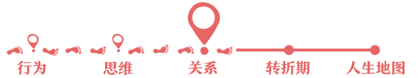
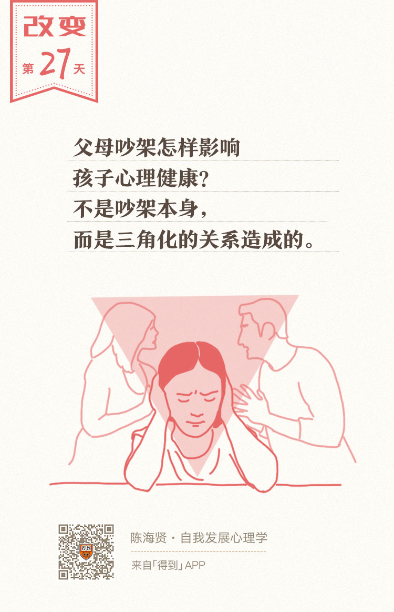

27丨关系的三角化：当心成为痛苦的“夹心人”

欢迎来到《自我发展心理学》。
你好，我是陈海贤。
上节课我们讲到了不安全依恋如何造成感觉的混淆，影响自我的发展。这一讲，我们再来讲另一种造成我们感觉混淆的不健康的关系模式。
这种关系也会让我们觉得很沉重，可是，又很难看清它的根源在哪里，常常会陷在其中却又很难改变。
这种关系模式就是关系的三角化。
普遍存在的“三角化”
不知道你有没有注意到，我们自己或者我们身边，比较稳定的关系，常常都是三个人的。
我们学生时代的死党密友经常是三个人，连《哈利·波特》里都是三个人组成的好朋友。伍迪·艾伦的电影《午夜巴塞罗那》里讲一对艺术家夫妻，两人经常吵架，在女主角加入组成了一个三人关系以后，两个人就不再吵架了。
这并不是偶然，而是一种常见的人际现象。
为什么呢？因为两个人发生矛盾和分歧的时候，很容易起冲突。这时候如果有第三人，两人之间的情感张力就会减弱一些，三个人的关系就会重新得到平衡。这就是我们今天要讲的三角关系。
作为一个家庭治疗师，我经常在咨询室里看到，夫妻之间在讲他们的问题，讲着讲着，要讲到他们的矛盾了，他们就会各自避开，去跟孩子说话。
“儿子你说说该怎么办？”、“儿子你说说是不是这样？”
他们这么做，既避免了彼此之间直接的冲突，同时还通过跟孩子说话，来向对方传递一些信息。
所谓的三角关系，就是当两个人之间的关系出现问题时，其中一个人或者两个人同时引入第三者，来减轻他们之间的情感张力，淡化他们的矛盾，从而让关系变得更稳定。
三角关系本身不是问题，它是一种正常的人际现象。
但是请注意，如果三角关系中的某个人，一直成了两个人解决矛盾的工具，那我们就说，这个人被三角化了。
被三角化的人，会产生很多的矛盾和困惑，别人的矛盾和情绪，就会变成他的问题。而他也会被卡在这段关系中，很难出来。
家庭治疗大师，发明三角化概念的鲍文（Murray Bowen）甚至说：
其实，三角化是很普遍的。以家庭关系为例，有些夫妻产生矛盾了，他们就会通过贬低孩子，来贬低对方。
比如，妻子跟丈夫说：“看看你家孩子，今天又惹什么祸了。”
丈夫会跟妻子说：“看看你教的儿子，成绩这么差！”
当夫妻这么说的时候，看起来他们是在指责儿子，其实是在指责对方对孩子的教育不上心，对家庭不够投入。
但是孩子不会知道，他会以为自己犯了错，才会让父母这么生气。
在关系的互补中，我们讲过一个例子：在咨询室里，爸爸指责妈妈，儿子就去保护妈妈。
这时候，孩子就会吸收妈妈的忧伤和对爸爸的愤怒。哪怕爸爸想靠近这个孩子都没有办法。这就是关系的三角化。
还有一种情况，父母都很爱孩子，这时候父母的一方经常会以孩子的名义向对方提要求：女儿说了要怎么怎么样，这样对女儿才是好的。对方还没法反驳。
这时候，孩子就会被提到一个很高的位置，成了父母权力的来源。女儿也会非常小心，担心自己的话会变成父母冲突的来源。这也是一种三角化。
职场中也有这样的三角化。很多办公室政治，就是这种三角化的产物。
我有一个来访者，本来在公司好好做自己的事，跟部门领导关系也不错，可是公司空降来一个大领导。
这个大领导对他倒没什么意见，可是跟那个部门领导特别不对付。
有一次他去做报告，出现了一个纰漏，部门领导也在，大领导就冷笑着说：“你们XX部门就是这种水平吗？”
看起来大领导是在说他，其实是借着他在说那个部门领导。部门领导当时脸色铁青，就把他训了一顿。
这个来访者说：“自从大领导和部门领导发生矛盾以后，我每天上班就跟上坟一样。明明是他们俩有矛盾，我却觉得自己比他们还累。”真是神仙打架，小鬼遭殃。这也是一种三角化。
被三角化的人，很容易产生很大的情感压力。
有个被卷入三角化的孩子说：“我就像是父母的拳击手套，他们看起来是打对方，其实都打在了我身上。”
这是被卷入三角化的人经常会有的感觉。
“三角化”阻碍真实情感的表达
三角化会如何影响自我的发展呢？
我想主要有三点：
第一个问题，它很容易让我们产生防御性的隔离。
就是，虽然我跟你们没有矛盾，但你们利用我，把我卷入到了你们的矛盾当中，那我干脆都离你们远一点。
可这也不是真的远离，而是你为了回避矛盾，不得不压抑对矛盾双方的情感。这时候，你对自己的情感就开始疏远了。
我有一个来访者曾跟我讲，很小的时候，她还有解决父母矛盾的冲动，她曾给爸爸写过一封信，请爸爸多关心家庭，早点回家。
结果这封信让妈妈看到了，妈妈就经常拿着这封信说她爸爸：“你看看，你女儿都说要让你好好回家了。”
这封信原来是她写的，可是当妈妈拿着这封信说爸爸的时候，她特别无地自容。
后来，她在家里就慢慢不太说话了，因为每次她还没来得及开口，妈妈就替她把话说了，而每次说的话，都是用来指责爸爸的：“你看你连女儿这点心思都看不到，女儿这点心思你也看不到。”
爸爸是很爱她的，妈妈这么说，爸爸通常就不说话了。
可是，她跟爸爸之间，就越来越没话说了。因为，妈妈把她说话的权力抢走了，把她的话当做了指责爸爸的工具。
第二个问题，扭曲我们的情感。
如果在三角化里，我们要站一边的话，那我们就要顺从我们站边的那个人，压抑对另一个人的感情，甚至表达对另一个人的愤怒，虽然我们自己对他也许没那么愤怒。
这时候，自我的情感，就不再是我们自己的了，而被关系里的某一方给借用了，成了其他人的工具。
我们家没什么太大的矛盾，可是也存在三角化的情况。
有一天我正在沙发上跟爱人和女儿玩，我爱人开玩笑地踢了我一下。女儿在旁边，本来跟我玩得好好的，见妈妈踢我，以为我们吵架了，就上来在我的脸上狠狠地抓了一把。
我真是抓在脸上疼在心里。
我爱人看到了，就赶紧说：“你为什么抓爸爸啊？妈妈是开玩笑的。”
女儿一副很不好意思的神情。我们以为这件事过去了，谁知道晚上女儿睡觉的时候还问妈妈：“妈妈，你是跟爸爸开玩笑的啊？”
我爱人说：“是啊。你怎么抓爸爸啊？”
女儿说：“我是真的生气。”
女儿今年三岁，不是很懂关系，可是她知道要对妈妈忠心。如果我跟爱人真的起冲突了，这种忠心会让她否定自己对我的感情。因为她要忠于妈妈，所以要拒绝爸爸，要对爸爸生气。
这时候，她就没法自由地表达和发展她自己的感情了。
第三个问题，内疚和自责。
被三角化的人常常觉得，都是自己的错，是因为自己没做好，所以才导致了另两人的矛盾。有时候，这会变成自卑的来源。
这一点，我们在接下来专门有一节课来讲。
现在，也许你已经明白了，三角化最大的问题，就是固化了我们的某个角色，让我们没有办法自由地表达我们自己的情感、想法和立场。
我们没法逃离这种关系，只好通过疏离或者扭曲自己的情感，来达到一种新的平衡。如果我们长期处于这样的关系中，我们就会生病。
这就是为什么鲍文说，大部分精神疾病的本质，就是三角化的问题。
我们都知道，父母吵架经常会影响孩子的心理健康，怎么影响的呢？不是吵架本身，而是这种三角化的关系造成的。
今天我们讲了关系中的三角化。也许你要问，那怎么处理呢？
我们要回到源头想，关系为什么会被三角化？是因为我们回避彼此的矛盾，所以通过引入第三人来解决。
如果你是正在把别人三角化，那你就要注意，不要把别人当做缓解矛盾的工具，有些冲突和矛盾需要你去面对，你必须去面对。
而如果你是被三角化的一方，你也需要重新回到两人关系。你可以跟关系中的每一方讲：我很想跟你们保持好的关系，可是我不想卷入你们之间的战争。让我们回到单纯的，我和你之间的关系。
总结一下。
这一讲我们说了另一种不健康的关系模式——关系的三角化。我们讲了什么是关系的三角化、三角化的各种形式，以及它对自我发展造成的影响。
到现在为止，我已经用了两节课的时间讲了感觉是怎么混淆的。下一讲，我们就来说关系中的另一种混淆——责任的混淆。
我们下一讲见。
